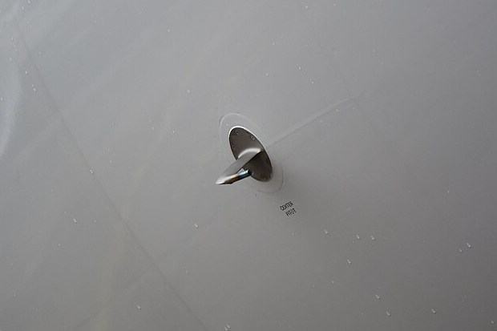

Presión total, presión estática y la velocidad que sale de su diferencia
Un auto sabe a qué velocidad va contando las vueltas de sus ruedas. Un avión no tiene ruedas que toquen nada en el aire. ¿Cómo sabe a qué velocidad vuela? Con un tubito de unos 25 centímetros que asoma del fuselaje o de un ala y que mide dos presiones. La diferencia entre ellas, con el teorema de Bernoulli, da la velocidad. Es el tubo de Pitot.
Según la guía de aeronáutica de la NASA, el tubo que usan los aviones, llamado tubo de Pitot-estático o tubo de Prandtl, mide unos 25 cm de largo y alrededor de 1 cm de diámetro [1]. Tiene un agujero en la punta, que mira de frente al aire, y varios agujeros chicos alrededor, en el costado [1].
Un sensor mide la diferencia entre las dos, que es la presión dinámica [1].
Por Bernoulli, la presión estática más la presión dinámica es igual a la presión total [1]. Despejando la velocidad [1]:
La hoja de problemas de hidráulica de John Fenton da un ejemplo: si el manómetro conectado a un tubo de Pitot marca una diferencia de 4 mm de agua, la velocidad del aire es de 8,08 m/s [3]. La NASA advierte que hay que conocer la densidad del aire, que se calcula con la presión y la temperatura, y cuidar las unidades: la densidad en kg/m³ y la presión en pascales [1].
La mano en el viento: poné la palma de frente al viento: sentís que te empuja. Ponela de costado: casi no la empuja. El tubo de Pitot hace esa comparación, pero con presiones: el agujero de frente siente el empujón del aire que se frena, el del costado no, y la diferencia dice qué tan rápido viene el aire.

La NASA enumera los límites prácticos del instrumento [1]:
La NASA agrega que hubo reportes de problemas de hielo en los tubos de aviones de pasajeros, y que la solución fue calentarlos para que el hielo no los tape [1].
Ese último límite tuvo consecuencias trágicas. El 1 de junio de 2009, el vuelo 447 de Air France, un Airbus A330 que iba de Río de Janeiro a París, cayó al Atlántico; murieron sus 228 ocupantes [4]. Según el informe de la oficina francesa de investigación de accidentes, el BEA, resumido por la Flight Safety Foundation, el problema empezó cuando los tres tubos de Pitot se taparon con cristales de hielo, y la información de velocidad dejó de ser confiable [4]. La velocidad que mostraba una de las pantallas bajó en segundos de unos 275 nudos a 60 [4].
El informe explica por qué ese tipo de hielo es traicionero: los cristales rebotan en la superficie del tubo y no se ve hielo por fuera, pero entran por la boca del tubo y alteran la medición de la presión total [4]. La pérdida de los datos de velocidad, junto con errores en la respuesta de la tripulación, llevó a que el avión entrara en pérdida [4].
No solo en aviones: OpenStax muestra el mismo principio con un manómetro conectado a dos tubitos, uno de frente al flujo y otro con una abertura lateral: la diferencia de altura del líquido en el manómetro es proporcional a ½ρv² [2]. Así se mide la velocidad de cualquier fluido, y por eso el tubo de Pitot se usa también en túneles de viento [1].
El tubo de Pitot es Bernoulli en su forma más directa: frenar el aire en un agujero, comparar su presión con la del aire que pasa, y sacar la velocidad. Es simple, barato y confiable, siempre que el aire pueda entrar sin obstáculos. Cuando se tapa, como en el vuelo AF447, el avión pierde algo tan básico como saber a qué velocidad va.
Pregunta para la comunidad: Un avión vuela a la misma velocidad cerca del suelo y a 10 000 metros de altura, donde el aire es mucho menos denso. ¿La presión dinámica que mide el tubo de Pitot es la misma en los dos casos? ¿Qué pasaría si el instrumento usara siempre la densidad del nivel del mar?